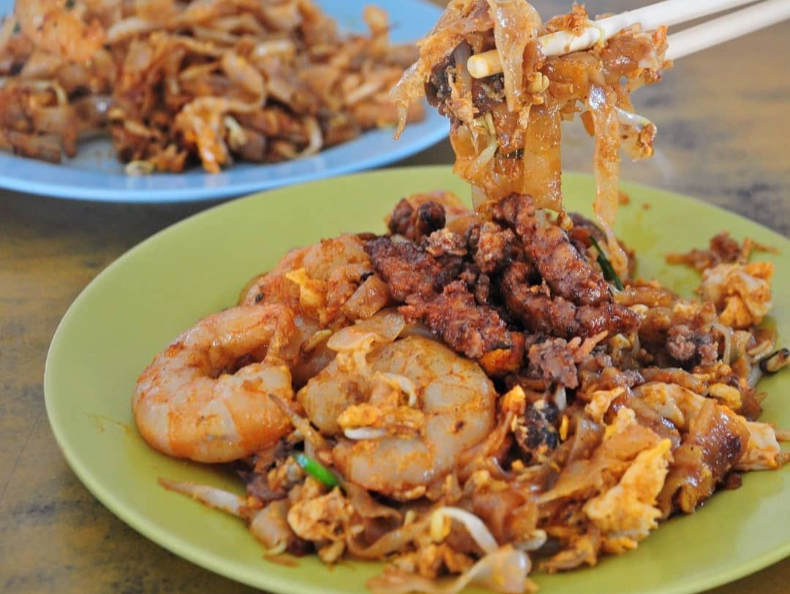

Char Kway Teow Recipe
Char Kuey Teow is a popular Malaysian hawker food dish made with flat rice noodles stir-fried with shrimp, bloody cockles, Chinese lap cheong (sausage), eggs, bean sprouts, and chives in a mix of soy sauce seasoning.
Ingredients:
- 500 g fresh wide rice noodle
- 2 tablespoon lard, or vegetable oil
- 2 tablespoon vegetable oil, separated
- 10 small prawns/shrimp, shelled and deveined
- 2 garlic cloves, finely chopped
- 1 Chinese sausage / Lup Chong Sausage, sliced thinly on the diagonal
- 5 cm piece of fried fish cake, sliced thinly
- 20 stems garlic chives, cut into 4 pieces
- 2 1/2 cups bean sprouts
- 2 eggs, whisked
- 5 teaspoon dark soy sauce
- 4 teaspoon light soy
- 2 teaspoon oyster sauce
- 4 teaspoon kecap manis / sweet soy sauce
Instructions:
- Heat 1 tablespoon oil in a large non stick skillet over high heat.
- When heated, add shrimp and cook for 1 1/2 minutes until just cooked through, then remove into bowl.
- Add Chinese sausage and fish cake, and cook for 1 minute until sausage is caramelised, then add to bowl.
- Add 1 tablespoon oil then add egg and cook, pushing in the edges to make a thick omelette. Once set, chop it up roughly using a wooden spoon (see video), then add to bowl.
- Add bean sprouts and cook for about 1 minute until just starting to wilt, then add to bowl.
- Add lard. Once melted and starting to smoke, add garlic then immediately add noodles. Fold gently 4 times using a spatula + wooden spoon (see video) just to disperse oil through noodles.
- Tip all the other ingredients back in plus the chives. Fold gently twice, then pour all the Sauce over.
- Gently toss 4 to 6 times to disperse the sauce, pausing in between to allow the noodles to have a chance to caramelise on the edges a bit.
- Remove from stove and serve immediately.